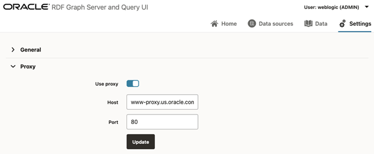

14.3.3.3 Proxy JSON Configuration File
The Proxy JSON configuration file contains proxy information for your enterprise network.
Figure 14-75 Proxy JSON Configuration File

Description of "Figure 14-75 Proxy JSON Configuration File"
The file includes the following parameters:
- Use proxy: flag to define if proxy parameters should be used.
- Host: proxy host value.
- Port: proxy port value.
Parent topic: Configuration Files for RDF Server and Client